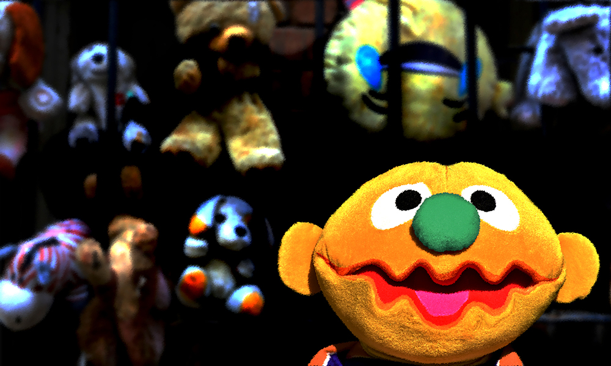

As a reader, it's a treat to discover an author whose writing just lights you up. As editor, it's always a nice feeling adding new names to the ranks of authors appearing in Mythaxis, every issue means more. But there's something a little extra special when you discover that the story you liked so much will be that author's first ever publication. Here's to a great debut! Aubrey Taylor doesn't so much hit the ground running as miss the ground completely and carry on flying.

"Talking animals" might be the most basic of fantastical tropes, but when done well it touches the commonplace knowledge that in real life animals communicate all the time, even across species – even with the likes of us. Jennifer McArdle does it well enough you'll wonder whether this is fantasy or not. All the more so when it is not only animals communicating with each other but also those with, perhaps, feet in both worlds.
There is another, equal, pleasure to that of welcoming new contributors to Mythaxis, of course: welcoming previous contributors back. Micah Hyatt's writing has twice appeared here as reprints, of "Plague Rooster" in issue 25 and "The Third Martian Dick Temple" in issue 25; joining these, a short, bittersweet rumination on the power of nostalgia and the strength of motivations driven by the thought of what we have lost.

With no-one but myself to blame, I sometimes feel like fantasy of the classic style (magical races, epic adventures, character classes, that sort of thing) appears too rarely in Mythaxis. Emma Burnett to the rescue, then, whose sideways take on such quests sprinkles in the odd technological anachronism and sly observation to give the whole escapade a fun, contemporary air right to the end. Or maybe, beginning?

The Muppets have been acting out alongside real people for, would you believe, sixty-nine years, though for me the old puppets-co-existing-with-human-beings chestnut peaked in 2012 with the video for K. Flay's "We Hate Everyone". Until now, that is, as Steve Loiaconi does for felt and jail breaks what "Who Framed Roger Rabbit?" did for cartoons and film noir…
Our quarterly cycling between review columnists begins another annual turn, raising Mattia Ravasi to the top of the wheel in this editor's increasingly laboured and probably broken metaphor. Not a problem shared by Mattia – nor by Kelly Link. Does her stellar reputation as a short story writer expand to embrace the long form?

After digressing onto short crime fiction in our last issue, we return to our regular programming with a selection of recommended speculative stories appearing in some of the small but perfectly formed zines out there in the online world. The editor promises three reviews, but rarely exercises such restraint.